Note
Go to the end to download the full example code.
LOLA-Voronoi sequential design of experiment¶
The LOLA-Voronoi sequential experiment helps to generate an optimized design allowing better approximations of functions taking into account empty regions and gradient values. It can be relevant to build a design of experiment for a metamodel: we will compare the LOLA-Voronoi design against a Sobol’ design as learning points for a chaos metamodel.
import openturns as ot
import openturns.viewer as otv
Lets use Franke’s bivariate function
dim = 2
f1 = ot.SymbolicFunction(
["a0", "a1"],
[
"3 / 4 * exp(-1 / 4 * (((9 * a0 - 2) ^ 2) + ((9 * a1 - 2) ^ 2))) + 3 / 4 * exp(-1 / 49 * "
"((9 * a0 + 1) ^ 2) - 1 / 10 * (9 * a1 + 1) ^ 2) + 1 / 2 * exp(-1 / 4 * (((9 * a0 - 7) ^ 2) "
"+ (9 * a1 - 3) ^ 2)) - 1 / 5 * exp(-((9 * a0 - 4) ^ 2) - ((9 * a1 + 1) ^ 2))"
],
)
print(f1([0.5, 0.5]))
distribution = ot.JointDistribution([ot.Uniform(0.0, 1.0)] * 2)
[0.112312]
Plot the function
ot.ResourceMap.SetAsString("Contour-DefaultColorMapNorm", "rank")
graph = f1.draw(
distribution.getRange().getLowerBound(), distribution.getRange().getUpperBound()
)
contour = graph.getDrawable(0)
contour.setLegend("model")
graph.setTitle("Model")
graph.setXTitle("x1")
graph.setYTitle("x2")
_ = otv.View(graph, square_axes=True)
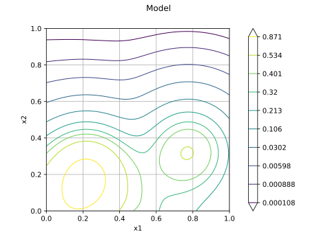
Plot the hessian norm
def pyHessianNorm(X):
h = f1.hessian(X).getSheet(0)
h.squareElements()
s = h.computeSumElements()
return [s**0.5]
hessNorm = ot.PythonFunction(f1.getInputDimension(), 1, pyHessianNorm)
graph = hessNorm.draw(
distribution.getRange().getLowerBound(), distribution.getRange().getUpperBound()
)
graph.setTitle("Hessian norm")
graph.setXTitle("x1")
graph.setYTitle("x2")
_ = otv.View(graph, square_axes=True)
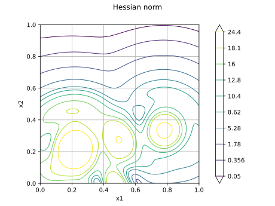
Lets define an initial design of experiments
N = 50
x0 = ot.LowDiscrepancyExperiment(ot.HaltonSequence(), distribution, N).generate()
y0 = f1(x0)
Plot the initial input sample
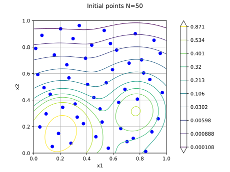
Instantiate the algorithm from the initial DOE and the distribution The algorithm can be fined-tuned using keys in ResourceMap, see the API documentation. It can have a major impact on the performance of the algorithm. In particular, if your distribution has independent components you may set “LOLAVoronoi-UseTruncatedDistribution” to True.
algo = ot.LOLAVoronoi(x0, y0, distribution)
Iteratively generate new samples: add 50 points, in 10 blocks of 5 points.
inc = 5
contour = contour.getImplementation()
contour.setColorBarPosition("") # hide color bar
for i in range(10):
graph = ot.Graph("", "x1", "x2")
graph.setLegendPosition("upper left")
graph.setLegendFontSize(8)
graph.add(contour)
graph.add(initial)
if i > 0:
previous = ot.Cloud(algo.getInputSample()[len(x0) : N])
previous.setPointStyle("fcircle")
previous.setColor("red")
previous.setLegend(f"previous iterations ({N - len(x0)})")
graph.add(previous)
x = algo.generate(inc)
y = f1(x)
algo.update(x, y)
N = algo.getGenerationIndices()[-1]
current = ot.Cloud(x)
current.setPointStyle("fcircle")
current.setColor("orange")
current.setLegend(f"current iteration ({inc})")
graph.add(current)
graph.setTitle(f"LOLA-Voronoi iteration #{i + 1} N={N}")
otv.View(graph, square_axes=True)
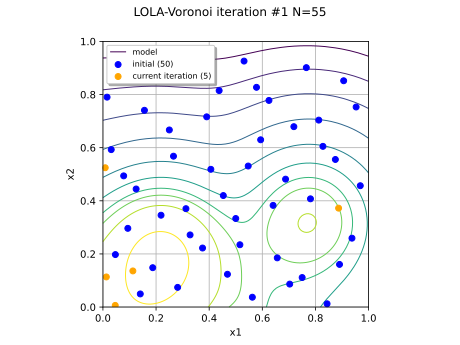
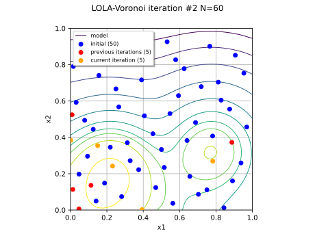
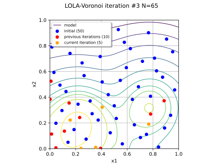
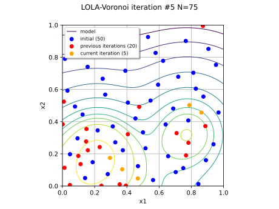
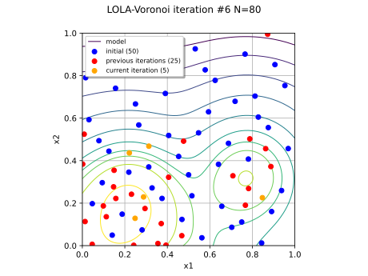
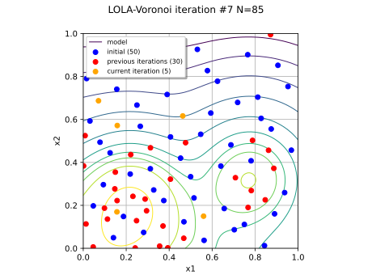
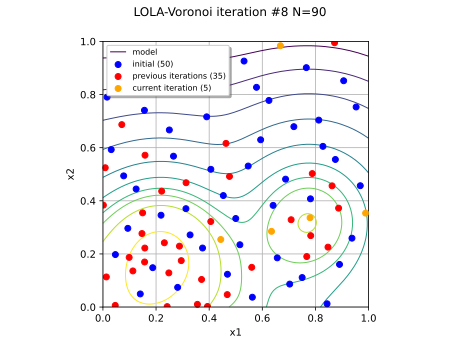
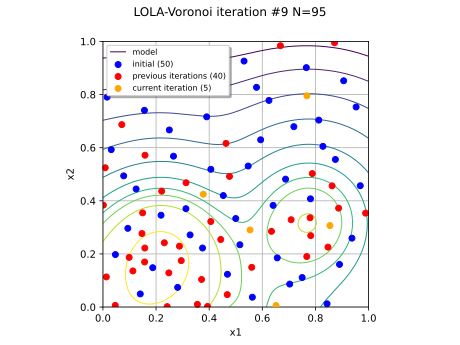
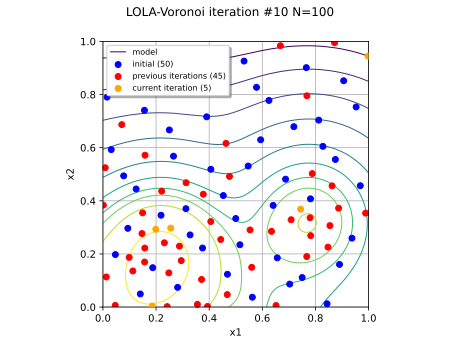
Lets compare metamodels from LOLA samples versus other design
xLola, yLola = algo.getInputSample(), algo.getOutputSample()
learnSize = xLola.getSize()
def runMetaModel(x, y, tag):
algo = ot.LeastSquaresExpansion(x, y, distribution)
algo.run()
metamodel = algo.getResult().getMetaModel()
yPred = metamodel(xRef)
validation = ot.MetaModelValidation(yRef, yPred)
mse = validation.computeMeanSquaredError()
maxerr = (yRef - yPred).asPoint().normInf()
print(f"{tag} mse={mse} r2={validation.computeR2Score()} maxerr={maxerr:.3f}")
Generate a large validation sample by Monte Carlo
nRef = int(1e6)
xRef = distribution.getSample(nRef)
yRef = f1(xRef)
Build a metamodel from Sobol’ samples
xSobol = ot.LowDiscrepancyExperiment(
ot.SobolSequence(), distribution, learnSize
).generate()
ySobol = f1(xSobol)
runMetaModel(xSobol, ySobol, "Sobol")
Sobol mse=[0.00400156] r2=[0.94908] maxerr=1.257
Build a metamodel on the LOLA global samples We observe that the metamodel error metrics (MSE, R2) and maximum error from the LOLA design are a bit better compared to the Sobol experiment
LOLA mse=[0.00299108] r2=[0.961939] maxerr=0.650
Define a function to plot the different scores
def drawScore(score, tag):
f = ot.DatabaseFunction(xLola, score)
lb = distribution.getRange().getLowerBound()
ub = distribution.getRange().getUpperBound()
graph = f.draw(lb, ub)
final = ot.Cloud(xLola)
final.setPointStyle("fcircle")
graph.add(final)
graph.setTitle(f"{tag} score")
graph.setXTitle("x1")
graph.setYTitle("x2")
otv.View(graph, square_axes=True)
Plot the Voronoi score: it matches unexplored areas on top or right borders.
algo.generate(inc) # triggers score update of the last batch
drawScore(algo.getVoronoiScore(), "Voronoi")
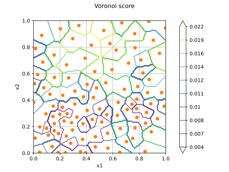
Plot the LOLA score: it underlines regions with high gradients variations
drawScore(algo.getLOLAScore(), "LOLA")
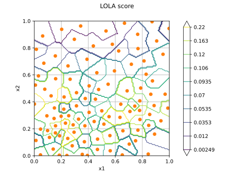
Plot the hybrid score: it exposes regions with medium-intensity gradients variations left to explore
drawScore(algo.getHybridScore(), "hybrid")
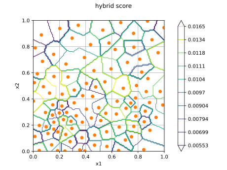
Show all plots